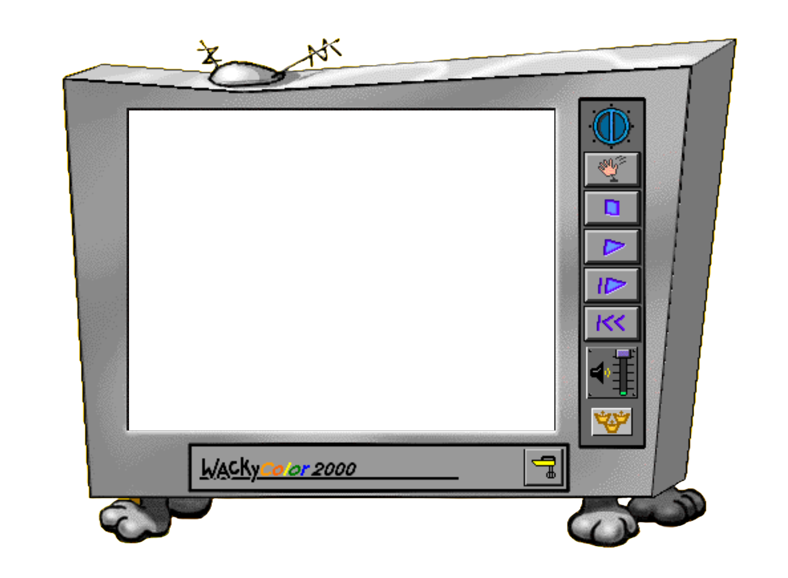

Wacky Pencil
The Wacky Pencil draws free-form lines. Select line widths, line styles, and line patterns from the Options bar.
The option produces a tint effect, like a water color wash, that's great for coloring Kid Pix 2 "hidden pictures."
The option cycles through a color palette while it draws, giving a "rainbow" effect.
